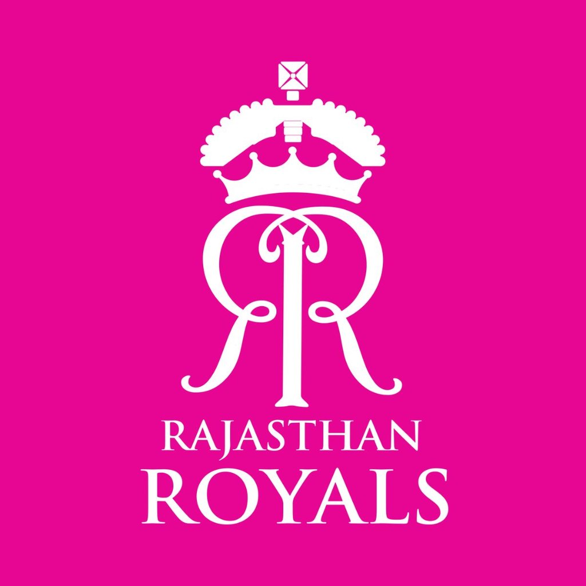

EXECUTIVE ACTION BLUEPRINT • WAR ROOM REPORT • IPL 2027
Primary Target: Arshdeep Singh (Left-arm Fast)
Alternates: Matheesha Pathirana, Jasprit Bumrah
Asymmetrical Release Angle: Pairing Arshdeep with Jofra Archer forces right-handers chasing 10+ RRR to adjust between high-arm 145 clicks and natural incoming left-arm angle.
Primary Target: Shashank Singh (RHB)
Alternates: Rinku Singh, Tristan Stubbs
The Season 1 Benchmark: Just as Season 1 uncovered Vignesh Puthur early, Shashank is the high-value domestic signing that preserves budget for top-order anchors.
Primary Targets: Akeal Hosein & Heinrich Klaasen
Marquee Option: Rashid Khan (if released)
Klaasen provides pure straight-bat swing (184.2 Pressure SR) that clears deep straight boundaries on turning tracks when early wickets fall.
Primary Targets: T Natarajan & Pramod Madushan
Pinch Role: Vaibhav Suryavanshi
Mitigates the Haris Rauf BCCI eligibility constraint by acquiring verified Indian yorker depth to navigate the grueling 14-match season.
| Identified Tactical Gap | Statistical Reality (2026 Squad) | Severity | War-Room Solution & Recommended Auction Target |
|---|---|---|---|
| Death Bowling Beyond Archer | Archer is injury-prone; Deshpande (11.15 eco), Sandeep (11.00 eco), Sen (12.73 eco) leaked runs catastrophically. | CRITICAL | Acquire Arshdeep Singh (#3) or Pathirana (#2). Fixes death overs permanently. |
| Lower-Middle Order Chase Finishing | Hetmyer death SR dropped below 170; Curran (154.3 SR) and Dubey lack boundary conversion in 10+ RRR. | CRITICAL | Sign Shashank Singh (#1) as primary Indian finisher at No. 6/7. |
| Middle-Overs Spin Destroyer | When top order falls on turning wickets, RR lacks an elite boundary-clearer against wrist-spin. | HIGH | Target Heinrich Klaasen (#3) or Pooran (#9). Clears deep straight boundaries. |
| Defensive Powerplay Spin | Ravi Bishnoi is an attacking middle-overs weapon but lacks early Powerplay boundary restriction. | MEDIUM | Sign Akeal Hosein (#5) — 6.18 PP eco, 52.4% dot balls for Jaipur SMS Stadium. |